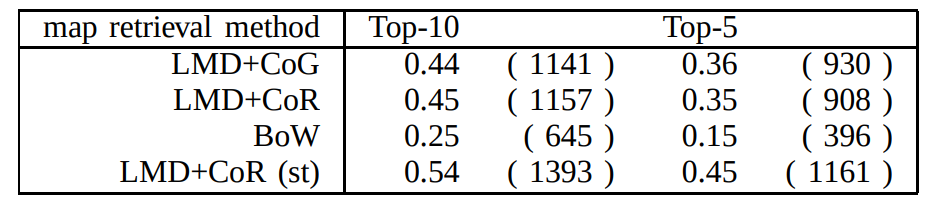

Change detection, i.e., anomaly detection from local maps built by a mobile robot at multiple different times, is a challenging problem to solve in practice. Most previous work either cannot be applied to scenarios where the size of the map collection is large, or simply assumed that the robot self-location is globally known. In this paper, we tackle the problem of simultaneous self-localization and change detection, by reformulating the problem as a map retrieval problem, and propose a local map descriptor with a compressed bag-of-words (BoW) structure as a scalable solution. We make the following contributions. (1) To enable a direct comparison of the spatial layout of visual features between different local maps, the origin of the local map coordinate (termed “viewpoint”) is planned by scene parsing and determined by our “viewpoint planner” to be invariant against small variations in self-location and changes, aiming at providing similar viewpoints for similar scenes (i.e., the relevant map pair). (2) We extend the BoW model to enable the use of not only the appearance (e.g., polestar) but also the spatial layout (e.g., spatial pyramid) of visual features with respect to the planned viewpoint. The key observation is that the planned viewpoint (i.e., the origin of local map coordinate) acts as a pseudo viewpoint that is usually required by spatial BoW (e.g., SPM) and also by anomaly detection (e.g., NN-d, LOF). (3) Experimental results on a challenging “loop-closing” scenario show that the proposed method outperforms previous BoW methods in self-localization, and furthermore, that the use of both appearance and pose information in change detection produces better results than the use of either information alone.
Fig. 1. The key idea is viewpoint planning in which the origin of the local map coordinate (termed “viewpoint”) is planned by scene parsing and determined by our “viewpoint planner” to be invariant against small variations in self-location and changes, which aims at providing similar viewpoints for similar scenes (i.e., the relevant map pair) and enables a direct comparison of both the appearance and the pose of visual features between each map pair (i.e., without requiring pre-alignment of each map pair). (a) A query local map (left) and a database local map (right) together with the robot’s trajectory (red points). (b) Scene parsing results (green line segments) and planned viewpoint (the big red point). (c) Detected anomaly (small colored boxes) and anomaly-ness score (color bar).
Fig. 2. The overall pipeline of the algorithm, which involves four main steps: viewpoint planning (a), local map descriptor (b), global self-localization (c: database retrieval, d: SPM matching) and change detection (e: anomaly detection, f: thresholding, g: re-ranking), which are described in sections III, III-A, III-B, and III-C, respectively.
Fig. 3. Datasets. (Purple points: point clouds. Green curve: robot’s trajectory. Each of the light blue line segments connects a local map pair that corresponds to each ground-truth loop closing.)
Fig. 4. Samples of scene parsing. 12 (= 3×4) different pairs of scene parsing are shown for 12 relevant pairings of a query local map (left) and a relevant database local map (right) with “query map’s ID, database map’s ID”. (Orange points: datapoints from the original local map. Boxes: “room” primitives proposed by the CoR method. The green big circle: planned viewpoint. Small blue points with lines: the robot’s trajectory. Green dots: unoccupied cells.)
Fig. 5. Change detection. Point clouds of the query and relevant database maps and ground-truth changes (light blue points) are overlaid using the information of the planned viewpoint, and are shown with “query map’s ID, database map’s ID”. The meaning of the datapoints, anomalies, and anomalyness is the same as in Fig.1.
Fig. 6. Self-localization performance. (Vertical axis: ANR[%]. For each dataset, from left to right, results for descriptor #1, ..., #8 are shown. )
Fig. 7. Change detection performance (LMD+CoG, descriptor#1). Horizontal axis: rank of change mask (log-scale). Vertical axis: recognition rate.
Table1：TOP-X% RECOGNITION RATE FOR 2,590 RETRIEVAL EXPEWRIMENTS
